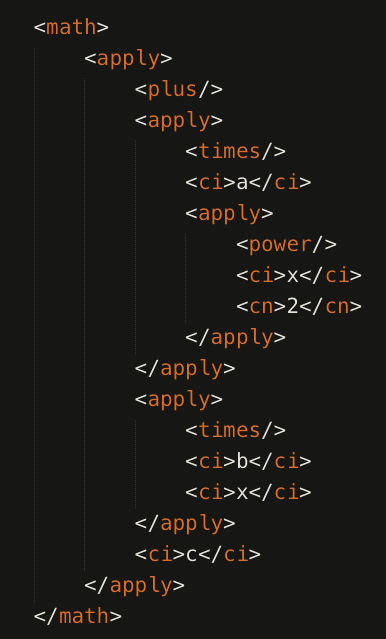

Hva er MathML?
MathML står for Mathematical Markup Language og er brukt for å strukturere og/eller presentere matematiske uttrykk.
Ved hjelp av vanlig HTML5 kan man få til enkle uttrykk som involverer ekspotenter og indekser ved å bruke elementer som < sub > (x2) og < sup > (x2).
Dette gir derimot veldig lite spillerom når det kommer til å formulere matematiske uttrykk.
MathML gjør det derfor mulig for oss å endre matematiske uttrykk direkte på siden, istedet for å være avhengig av eksterne editorer som "Equation Editor" i Open Office som genererer MathML-kode.
Fordeler og ulemper
En av fordelene ved å bruke MathML fremfor å sette inn et bilde er at søkemotorer kan plukke opp de matematiske uttrykkene. I tillegg kan man endre matematikken direkte på siden.
Fordi meningen med ligningen er adskilt fra selve presentasjonen kan innholdet ogdå formidles til brukere gjennom forskjellige metoder. Dette vil si at, for eksempel, synshemmede kan få ligningen lest opp ved bruk av skjermlesere.
Ulempene derimot er at ikke alle nettlesere støtter MathMl. I tillegg kan det være relativt vanskelig og tungvint å bruke i starten.
MathML forklart
For å bruke MathML-utvidelsen må du plassere math-taggen innenfor body, deretter bruke de riktige elementene og attributtene for å få ønsket resultat.
For å lettere forstå MathML derimot kan vi dele det opp i to deler: (1) presentasjon og (2)innhold.
Presentasjon
Presentasjons-delen av MathML fokuserer på visningen av matematikken. Det er omkring 30 forskjellige elementer, hvor alle begynner med m.
Uttrykkene er bygget opp av tokens som kombineres med høyere nivåelementer, som styrer layouten; i tillegg er det omkring 50 attributter som hovedsakelig kontrollerer finere detaljer.
Token-elementer inneholder stortsett kun tegn (ikke andre elementer). For eksempel:
| Element | Innhold |
|---|---|
| Identifikatorer | <mi> x <mi> |
| Operatører | <mo> + <mo> |
| Tall | <mn> 3 </mn> |
| Tekst | <mtext> ingenting </mtext> |
På den andre siden har vi layoutelementer som vanligvis kun inneholder andre elementer. For eksempel:
| Element | Innhold |
|---|---|
| En horisonal rekke med elementer | <mrow> |
| Fraksjoner | <mfrac> |
| Røtter | <mroot> |
| Omgivende innhold med "gjerder", for eksempel paranteser | <mfenced> |
Så klart er det mye mer til presentasjons-delen av MathML, men dette er bare en liten itroduksjon for å skjønne det grunnleggende.
Innhold
Innholds-delen av MathML fokuserer på semantikken (betydningen) av utrykkene fremfor utformingen. Sentralt for innholdet i MathML er elementet <apply som representerer funksjonsprogrammet.
I motsetning til utformningen er det over hundre forskjellige elemeter for funksjoner og operatører. Dette gir så klart større spillerom, men også større frustrasjons-rom.
For eksempel kode-biten:
<apply><sin/><ci>x</ci></apply>
representerer sin(x). Elementene som representerer operatører og funksjoner er tomme elementer fordi operatorer er de andre elementene som apply inneholder.

Til venstre kan du se kode-biten som er plassert i HTML-dokumentet.
Som med mye annen kode innenfor html må man skrive relativt mye kode for å frem relativt lite resultat, men med trening blir alt lettere.